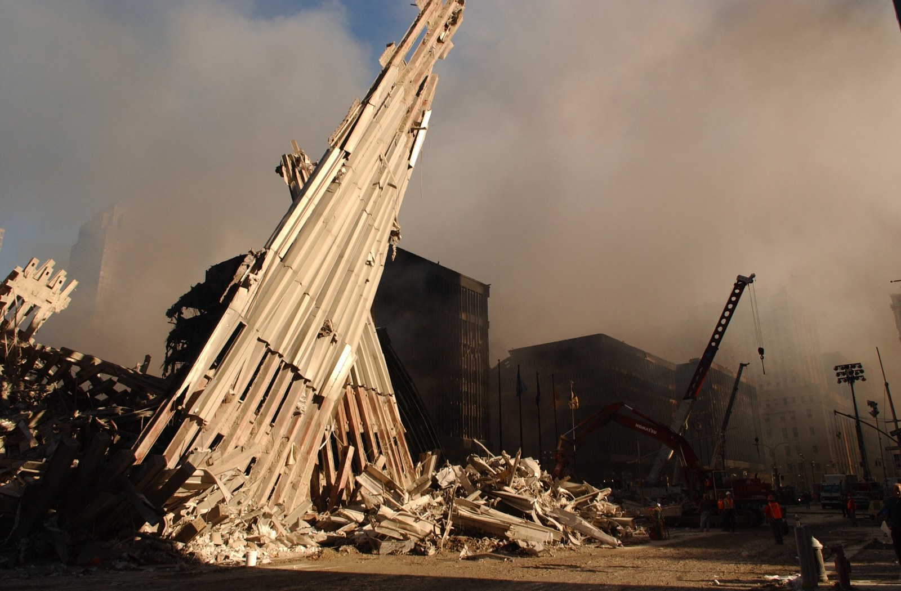
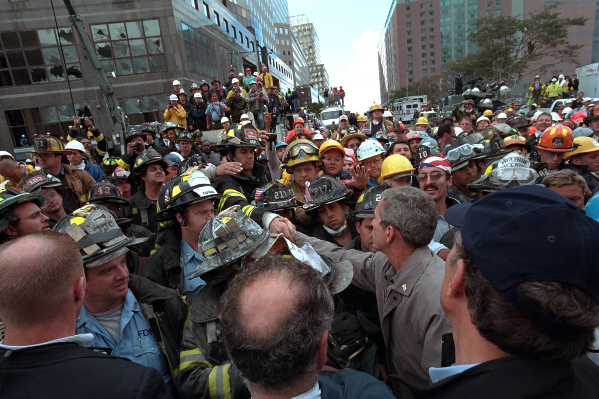

Directions: Work through the five stations in order. Each station holds one record from 2001 to 2004. For each record, work out three entries: the power claimed or the finding made, the evidence offered for it, and the check placed on it if any. You will build the full file in Part 2 and judge the era's machinery from it.
Source: The 9/11 Commission Report, executive summary, 2004. Text quoted verbatim from the audited TPSP record 911-commission-report-exec-summary-2004; the edition named in that record is National Commission on Terrorist Attacks Upon the United States, "The 9/11 Commission Report: Executive Summary," 2004 (the Commission's own edition). Cuts are marked with ellipses. The photograph shows workers clearing debris from the World Trade Center wreckage on September 14, 2001. Photograph by Andrea Booher, FEMA.

"September 11, 2001, was a day of unprecedented shock and suffering in the history of the United States. The nation was unprepared."
"What we can say with confidence is that none of the measures adopted by the U.S. government from 1998 to 2001 disturbed or even delayed the progress of the al Qaeda plot. Across the government, there were failures of imagination, policy, capabilities, and management."
"The most important failure was one of imagination. We do not believe leaders understood the gravity of the threat."
File entries. What finding does this record make? Name the four failures in the report's order, state which one the Commission calls the most important, and state the claim it makes about every measure the government adopted from 1998 to 2001.
What check is this record itself? It is an investigation created by law to judge the government that failed. State what a commission of this kind can do, establish a public record and recommend changes, and what it cannot do to any official it names.
Source: President George W. Bush, address to the nation on the September 11 attacks, delivered from the Oval Office on the night of September 11, 2001. Text quoted verbatim from the audited TPSP record bush-911-address-2001; the edition named in that record is George W. Bush, "Address to the Nation on the September 11 Attacks," September 11, 2001 (archived White House press release). Cuts are marked with ellipses. The photograph shows the president greeting firefighters, police, and rescue personnel at the World Trade Center site three days later. Photograph from the Records of the White House Photo Office, National Archives.

"The search is underway for those who are behind these evil acts. I've directed the full resources of our intelligence and law enforcement communities to find those responsible and to bring them to justice. We will make no distinction between the terrorists who committed these acts and those who harbor them."
"America and our friends and allies join with all those who want peace and security in the world, and we stand together to win the war against terrorism."
File entries. What power does this record claim, and against whom? Quote the sentence that sets the rule, name the two classes of enemy it joins in that sentence, and state what the second quotation declares the country and its allies stand together to win.
Evidence and check. What evidence does the address offer for the rule it sets? State what the passage does not contain: it names no country, presents no proof, and sets no limit or time frame. Then state what this record cannot do by itself. An address authorizes no force and spends no money; the authorization had to come from Congress, in the record at Station 3.
Source: Authorization for Use of Military Force, Public Law 107-40, Section 2, approved September 18, 2001, one week after the attacks. Text quoted verbatim from the audited TPSP record authorization-use-military-force-2001; the edition named in that record is U.S. Congress, "Authorization for Use of Military Force," 2001 (Office of the Law Revision Counsel). The resolution passed the Senate 98 to 0 and the House 420 to 1.
"(a) IN GENERAL. -- That the President is authorized to use all necessary and appropriate force against those nations, organizations, or persons he determines planned, authorized, committed, or aided the terrorist attacks that occurred on September 11, 2001, or harbored such organizations or persons, in order to prevent any future acts of international terrorism against the United States by such nations, organizations or persons."
"(b)(2) APPLICABILITY OF OTHER REQUIREMENTS. -- Nothing in this resolution supercedes any requirement of the War Powers Resolution."
File entries. What power does this passage grant, and who holds it? Name the force authorized, the three kinds of target it names, and the four verbs that connect a target to the September 11 attacks. Then state the two words that hand the choice of targets to the president.
What check does the passage place on the power it grants? Answer from both subsections: the limit inside subsection (a), which ties the force to the attacks of September 11, 2001, and the sentence in subsection (b) preserving the requirements of the War Powers Resolution. Then state what the passage leaves to the president's own judgment.
Source: USA PATRIOT Act, Section 102, "Sense of Congress Condemning Discrimination Against Arab and Muslim Americans," enacted October 26, 2001, in the same statute that widened the government's powers of surveillance, search, and detention. Text quoted verbatim from the audited TPSP record patriot-act-section-102-2001; the edition named in that record is U.S. Congress, "USA PATRIOT Act, Section 102," 2001 (GovInfo). Cuts are marked with ellipses.
"(1) Arab Americans, Muslim Americans, and Americans from South Asia play a vital role in our Nation and are entitled to nothing less than the full rights of every American."
"(3) The concept of individual responsibility for wrongdoing is sacrosanct in American society, and applies equally to all religious, racial, and ethnic groups."
"(b) Sense of Congress. -- It is the sense of Congress that -- (1) the civil rights and civil liberties of all Americans, including Arab Americans, Muslim Americans, and Americans from South Asia, must be protected, and that every effort must be taken to preserve their safety . . ."
File entries. What finding does this section make? Name the three groups the findings name, state the right the first finding says they hold, and state the principle the third finding calls sacrosanct.
What check does this section place on the statute it stands inside? A sense of Congress declares a position; it orders no official to do anything and sets no penalty. State why Congress placed it in this law anyway, answering from finding (3): the principle it states is the one the widened powers would be judged against.
Source: Comprehensive Report of the Special Advisor to the DCI on Iraq's WMD, Key Findings, September 30, 2004 (Central Intelligence Agency edition, archived by the Government Publishing Office). The Iraq Survey Group, led by Charles Duelfer, searched Iraq after the invasion for the weapons whose claimed presence had been the stated ground for the war. Text quoted verbatim from the Key Findings.
"Saddam Husayn ended the nuclear program in 1991 following the Gulf war. ISG found no evidence to suggest concerted efforts to restart the program."
"While a small number of old, abandoned chemical munitions have been discovered, ISG judges that Iraq unilaterally destroyed its undeclared chemical weapons stockpile in 1991. There are no credible indications that Baghdad resumed production of chemical munitions thereafter."
File entries. What findings does this record make? State the two findings in full, and give the year at the center of both of them.
Evidence and check. The Survey Group searched the country itself, at the sites, and interviewed detained officials of the regime, as the report describes. State what that search could settle that the prewar claims could not. Then state what the findings do not say: they do not say Iraq never had these programs, and the same report found that Saddam intended to rebuild his capability once sanctions ended. Keep both halves in your entry.
Complete the file from your station work. Then answer the verdict question in a paragraph, defending your judgments from the texts.
| Record | Power claimed or finding made | Evidence offered | Check placed on it |
|---|---|---|---|
| 1. The Commission report, 2004 | |||
| 2. The president's address, 2001 | |||
| 3. The AUMF, 2001 | |||
| 4. PATRIOT Act, Section 102 | |||
| 5. The Duelfer findings, 2004 |
The verdict. Which single document in this file shows the era's machinery at its strongest, and which shows it at its most questionable? Name both documents, defend each judgment with evidence from at least two stations, and answer the strongest claim for one other document.
What finding does the record make? The Commission finds that no measure the government adopted from 1998 to 2001 disturbed or even delayed the al Qaeda plot, and it assigns the failure to the whole government across four heads, in its order: imagination, policy, capabilities, and management. The most important was imagination: the Commission does not believe leaders understood the gravity of the threat.
What check is the record itself? A commission of this kind is a check by record and recommendation. Created by law, with members from both parties, it can compel testimony and documents, hold public hearings, and publish a judgment the government must answer in public. It cannot prosecute, remove, or fine anyone it names. Its strength is the record itself: after July 2004, no official could describe the failure in softer terms than the Commission's without meeting its evidence.
What power does the record claim, and against whom? The address claims the power to hunt down and punish the attackers, and it sets the rule in one sentence: "We will make no distinction between the terrorists who committed these acts and those who harbor them." The two classes joined are the terrorists themselves and those who harbor them, which in practice meant the governments sheltering them. The second quotation declares that America and its allies "stand together to win the war against terrorism." The direction of the full intelligence and law enforcement resources is ordered in the same passage.
Evidence and check. The address offers no evidence in the passage: it names no country, presents no proof connecting any government to the attacks, and sets no limit or time frame on the campaign it declares. Its facts are about the night itself, the search underway and the resources directed. What it cannot do is authorize anything. A presidential address can declare a rule and commit the presidency's prestige to it, but the legal power to use force had to be granted by Congress, which is the record at Station 3, passed one week later.
What power does the passage grant, and who holds it? The passage authorizes the president to use all necessary and appropriate force. The targets are three kinds: nations, organizations, or persons. The connecting verbs are planned, authorized, committed, or aided, and a target may also be one that harbored such organizations or persons. The two words that hand the choice of targets to the president are "he determines": the president himself decides which nations, organizations, or persons meet the description.
What check does the passage place on the power? Two checks stand in the text. Inside subsection (a), the force is tied to the terrorist attacks that occurred on September 11, 2001: a target must be connected to those attacks or to harboring those who carried them out, and the stated purpose is to prevent future acts by such nations, organizations, or persons. In subsection (b), the resolution declares that nothing in it supercedes any requirement of the War Powers Resolution. What the passage leaves open is the determination itself: the president judges the connection, and the same one page of law, written for al Qaeda and the Taliban, was later cited by administrations for operations against groups that did not exist in 2001, a use its defenders and critics argued from this same text.
What finding does the section make? The findings name Arab Americans, Muslim Americans, and Americans from South Asia. The first finding holds that they play a vital role in the nation and are entitled to nothing less than the full rights of every American. The third finding states the principle: the concept of individual responsibility for wrongdoing is sacrosanct in American society and applies equally to all religious, racial, and ethnic groups. The sense of Congress follows from the findings: the civil rights and civil liberties of all Americans must be protected and every effort taken to preserve their safety.
What check does the section place on the statute? Formally, none that a court could enforce. A sense of Congress declares the legislature's position; it creates no right, orders no official, and sets no penalty. Its placement is the point students should reach: Congress wrote the principle of individual responsibility into the same statute that widened group-based investigative powers, in the weeks when violence against Arab and Muslim Americans was being committed and condemned in the section's other findings. The section is the standard the statute's own authors set for judging the powers that surround it, and later arguments over surveillance and detention quoted it for exactly that purpose.
What findings does the record make? Two findings, both centered on 1991. Saddam Husayn ended the nuclear program in 1991 following the Gulf war, and the Survey Group found no evidence to suggest concerted efforts to restart it. Iraq unilaterally destroyed its undeclared chemical weapons stockpile in 1991, a small number of old, abandoned chemical munitions aside, and there were no credible indications that Baghdad resumed production of chemical munitions thereafter.
Evidence and check. The Survey Group's evidence was the country itself: its teams searched the sites the prewar claims had named, exploited the regime's documents, and interviewed the detained officials who had run the programs. That search could settle the stockpile question as prewar intelligence, working from outside a closed country, could not: it looked where the weapons were said to be. The findings are a check of a particular kind, the government's own inspectors reporting against the government's own claim. The second half must be kept with the first: the findings do not say Iraq never had these programs, which it plainly had before 1991, and the same report found that Saddam intended to recreate his capability once sanctions were removed.
| Record | Power claimed or finding made | Evidence offered | Check placed on it |
|---|---|---|---|
| 1. The Commission report, 2004 | A finding of failure across the government: imagination, policy, capabilities, and management, with imagination the most important. | The record of 1998 to 2001: no measure adopted in those years disturbed or delayed the plot. | It is itself the check: a public record and recommendations. It can name and shame; it cannot punish. |
| 2. The president's address, 2001 | The rule of the response: no distinction between the terrorists and those who harbor them, and a declared war against terrorism. | None in the passage: no country named, no proof presented, no limit or time frame set. | An address authorizes nothing. The legal power had to come from Congress, at Station 3. |
| 3. The AUMF, 2001 | Presidential power to use all necessary and appropriate force against nations, organizations, or persons he determines planned, authorized, committed, or aided the attacks, or harbored those who did. | The attacks themselves, recited in the resolution's findings; the votes, 98 to 0 and 420 to 1. | The tie to the September 11 attacks in the text, and the War Powers Resolution expressly preserved. The determination itself is the president's. |
| 4. PATRIOT Act, Section 102 | A finding: Arab Americans, Muslim Americans, and Americans from South Asia hold the full rights of every American, and individual responsibility for wrongdoing is sacrosanct. | The findings themselves, including the record of violence against Arab and Muslim Americans after the attacks, stated in the section's full text. | A sense of Congress only: a declared standard inside the statute, enforceable by no court, quotable in every later argument. |
| 5. The Duelfer findings, 2004 | A finding against the war's stated ground: the nuclear program ended and the chemical stockpile destroyed, both in 1991; no stockpiles existed in 2003. | The search of the country itself: sites inspected, regime documents exploited, detained officials interviewed. | The government's own inspectors checking the government's own claim, and reporting the second half too: Saddam intended to rebuild once sanctions ended. |
Verdict grading guide. Judgments may pair the five documents in different ways and earn full credit when both halves are defended from at least two stations each. The strongest cases for machinery at its strongest are usually made for the AUMF, one page that raised an army's legal authority in a week on votes of 98 to 0 and 420 to 1, or for the Duelfer findings, the government's own search settling the question the war had turned on. The strongest cases for machinery at its most questionable are usually made for the same AUMF, read for what "he determines" leaves open, or for the address at Station 2, a rule of war announced with no evidence in the text, or for Section 102, a check written as a declaration with no enforcement inside a statute of real powers. A verdict that treats the address as a law, that reads Section 102 as an enforceable ban, or that reports the Duelfer findings without their second half (intent to rebuild after sanctions) has misread Stations 2, 4, or 5. Grade the use of evidence, never the side taken.